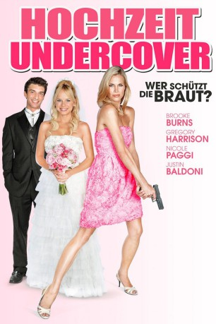

#3976 Hochzeit Undercover - Wer schützt die Braut?
Alternativ: Undercover Bridesmaid
 
 IMDB-Wertung: 5.5 / 10
IMDB-Wertung: 5.5 / 10  Metascore: 0
Metascore: 0 
Tanya (Brooke Burns) hat in ihrem Job normalerweise eher wenig mit Hochzeiten zu tun. Sie arbeitet als Bodyguard in einer Security-Firma und da sie die einzige Frau in ihrer Firma ist, kommt für den nächsten Auftrag nur sie in Frage. Die Tochter des reichen Industriemagnaten Mr. Thompson (Gregory Harrison) soll vor den Altar treten. So ein Event muss natürlich streng bewacht werden, damit der verwöhnten Braut Daisy (Nicole Paggi) nichts geschieht und alles glatt über die Bühne geht. Tanya ist also gezwungen als Brautjungfer die ganze Zeit mitten im Geschehen dabei zu sein. Doch Daisy hält sich nicht gerne an Regeln, schon gar nicht wenn es um ihre eigene Hochzeit geht. Bei diesem routinemäßig anmutenden Job wird Tanya auf eine harte Probe gestellt. Als dann noch herauskommt, dass ein Freund des Bräutigams unter falschem Namen auf der Hochzeit aufgetaucht ist, droht die Traumhochzeit zum Alptraum zu werden.
Jahr: 2012
Dauer: 86 Minuten
FSK: 6
Land: USA Studio: Hallmark Channel, TheTonspuren:
Untertitel: Deutsch,
Auflösung: 720p (1280x720) Größe: 1884 MB
Genre: Liebe
Regisseur: Matthew Diamond
Drehbuch: Albert Ruben
Soundtrack:
Darsteller:
- Brooke Burns als Tanya
- Gregory Harrison als Mr. Thompson
- Nicole Paggi als Daisy
- Justin Baldoni als Jake
- Martha Madison als Sally
- Nadège August als Kimmy
 Shashawnee Hall als Henry
Shashawnee Hall als Henry- Jay Kenneth Johnson als Chip
- Kayla Mae Maloney als Betsy
- David Thomas Jenkins als Robbie
- Steven Eckholdt als Cousin Eldridge
 Dale Raoul als Aunt Helen
Dale Raoul als Aunt Helen- John Sanderford als Bosworth
- Terry Maratos als Carlo
 Rick Scarry als Chesterton
Rick Scarry als Chesterton- David Grant Wright als Daisy's Minister
 Ajay Mehta als Ogul - Turkish Consul
Ajay Mehta als Ogul - Turkish Consul- Jamison Jones als Kevin
- Jon Paul Burkhart als Rob
- Paul Stroili als Flashback Minister
- David James Pryce als Ritchie
- Ann Walker als Constance
- Dan Horton als Cowboy Eric
- Holly Hannula als TV Reporter
- Kristen Viducic als Pretty Maid , uncredited
Datei: X:\2012(G-M)\Hochzeit Undercover - Wer schützt die Braut (2012, FSK6, 1280x720).mkv seit 08.07.2016
Festplatte: HD 2012(A-M)
 Es gibt insgesamt 112 Filme in der Gruppe '2012(G-M)'
Es gibt insgesamt 112 Filme in der Gruppe '2012(G-M)'